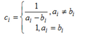

Постановка задачі лабораторної роботи №4
Тема:
Функціональне застосування JavaScript у HTML-документі. Класи, об'єкти, функції в мові JavaScript. Події та обробка подій. Програмна взаємодія з HTML документами на основі DOM API.
Мета: Здобути практичні навички маніпулювання інформаційним вмістом Web-документа засобами мови JavasSript, використання об’єктів, масивів, функцій, подій, обробників подій у сценаріях на мові JavaSript
Місце розташування лабораторних робіт
Способи функціонального застосування JavaScript
Схема URL
В якості прикладу використання схеми URL наведено посилання яке викликає спливаюче вікно.
HTML-код
<a href="JavaScript:alert('Ви натиснули на посилання');">
Приклад схеми URL
</a>
Обробник подій
Підстановка(entity)
Вставка(тег script)
Масиви(4 пункт)
Завдання
Варіант 4:
Задані одновимірні масиви А, В з 10 чисел. Побудувати масив С, кожний елемент якого обчислюється за формулою:

В масиві С поміняти максимальний елемент і перший. Вивести масиви до переставлення елементів та після.
Впорядкувати масив у порядку зростання методом бульбашки. Надрукувати вхідний та вихідний масив.
Застосувати функції.
Варіант 7:
Створити одновимірний массив. Знайти найбільший серед від’ємних та найменший серед додатних елементів масиву.
Упорядкувати масив у порядку зменшення методом вибору. Надрукувати вхідний та вихідний масив.
Застосувати функції.
Код реалізації завдання
Варіант 4:
Варіант 7:
Результат виконання
Варіант 4:
Варіант 7:
Виконання 6 пункту
Завдання
Варіант 4:
Текстовий редактор
Реалізувати редактор, який би дозволяв виконувати форматування тексту, який уводиться.
Обов‘язкові елементи форматування: напівжирність, нахил, підкреслювання, колір тексту,
регістр символів. Елементи форматування мають бути доступними через відповідні кнопки,
форматований текст – у окремому вікні на сторінці.
Варіант 7:
Гістограма
Реалізувати можливість уведення довільної кількості чисел у елементи форми та побудови
нормалізованої за максимальним числом гістограми значень цих полів. При візуалізації
гістограми використовувати лише засоби CSS.
Код реалізації завдання
Варіант 4:
Варіант 7:
Результат виконання
Варіант 4:
Варіант 7:
Висновки
В процесі виконання роботи було здобуто навички функціонального застосування JavaScript у HTML-документі. Було застосованно на практиці знання про класи, об'єкти, функції в мові JavaScript. Застосовано події та обробку подій. Отримано навички програмної взаємодії з HTML документами на основі DOM API.